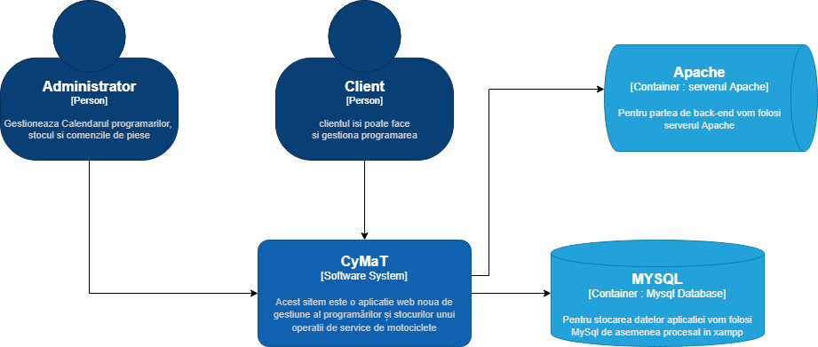

| Name | Date | Reason For Changes | Version |
|---|---|---|---|
| Evaluare partea 1:html/css si documentatie | 12-04-2022 | Versiunea 1 |
Scopul acestui proiect este rezolvarea acestei cerinte la obiectul Tehnologii Web:
"Creați un sistem online de management al programărilor și stocurilor unui operatii de service de motociclete, biciclete, trotinete (electrice sau nu). Fiecare client va consulta calendarul service-ului, iar apoi va completa un formular cu data și ora dorită, plus detalii despre problemă, putând adăuga inclusiv fișiere multimedia (imagini și filme).
Administratorul afacerii va putea respinge programarea adăugând un mesaj explicativ: "Ne pare rău, dar nu avem în stoc piesele necesare pentru reparație, reveniți în S săptămâni" sau o va putea aproba, oferind și un preț estimativ, plus alte detalii de interes. De asemenea, aplicația îi va permite acestuia să țină evidența stocurilor existente, cât și a comenzilor date către furnizori. Sistemul va putea importa date în format CSV și JSON. Pentru exportul datelor, se va recurge la oricare dintre formatele CSV, JSON, PDF. Bonus: simularea activitatii service-ului pe o perioada de timp: luni/ani."
De asemena trebuie sa respectam si cerintele de aici : Pagina Tehnologie Web
Am incercat sa folosim urmatoarele conventii in rezolvarea proiectului:
pentru documentatie am folosit formatul Scholarly HTML
conform celor precizate în macheta IEEE System Requirements Specification Template
nume clase HTML/CSS respectand reguli de denumire de la parinte spre copii. Ex: "parinte" -> "parinte__copil-1" "parinte__copil-2"
o tema cromatica similara in toate paginile
paginile au icons de pe fontawesome alternat cu tabelul unicode
paginile HTML similare au in general acelasi fisier CSS.
paginile HTML au in general acelasi meniu pentru clienti in diferite pagini. Similar si pentru admin.
paginile HTML au in general aspect asemanator.
Audienta acestui proiect este profesorul evaluator. Si recomandam citirea documentatiei incepand cu sectiunea generala de introducere.
Audienta acestui proiect este profesorul evaluator. Si recomandam citirea documentatiei incepand cu sectiunea generala de introducere.
Acest sitem este o aplicatie web noua de gestiune al programărilor și stocurilor unui operatii de service de motociclete 
Lista de functii ale aplicatiei web:
gestiune programarilor service-ul de motociclete din punctul de vedere al clientilor si administratorului
calendar pentru alegerea unei date si ore disponibile pentru client
formular pentru client de completarea a unei programari cu descrierea problemei prin text si fisiere video/imagini
administratorul poate raspunde unui formular printr-un mesaj text si o propunere de pret cu piese necesare.
administratorul poate respinge un formular cu un mesaj explicativ
apoi clientul poate accepta/respinge oferta de pret a administratorului
clientul isi poate vedea istoricul programarilor
gestiune stocurilor service-ul de motociclete din punctul de vedere al administratorului
pagina ce permite editare numarului de piese aflate in stoc (totale cat si a celor rezervate pentru programari)
gestiune comenzilor service-ul de motociclete din punctul de vedere al administratorului
pagina ce permite trimiterea unei comenzi de piese catre furnizorii
pagina ce permite gestiunea comenzilor date (mutarea din lista de asteptare in stoc)
gestiune datelor pentru administrator
export diferite parti din datele aplicatiei in format CSV/JSON/PDF
import diferite parti din datele aplicatiei in format CSV/JSON
Ne propunem sa folosim un model MVC si anticipam sa folosim urmatoare clase:
core:
App si Controller
Api, Programare, Formular, Piesa, Login , Reset, Signup, Comanda, Stoc ...
models:
User, Formular, Comanda , Piesa, Date ...
views:
PaginaPrincipala, Formular, Calendar, Istoric, Stoc, Comenzi, Api ...
Folosim pagini web compatibile HTML5 cu CSS si JavaScript pentru interactiuni locale cu utilizatorul. Pentru partea de backend ne propunem sa folosim PHP ce va fi procesat in Xampp intr-un server de Apache. De asemenea pentru stocarea datelor aplicatiei vom folosi MySql de asemenea procesat in Xampp.
Desing-ul este limitat de timpul scurt de realizare a aplicatie si cunostintele noastre actuale...
Nu cunoastem dependente.
Logica principalelor interfete pentru utilizatori nostri.
logica interfata programari clienti/admin:
un grid cu dreptunghiuri cu functionalitate de buton de la 08 la 19, de Luni pana Duminica
butoane de stanga-dreapta pentrua a schimba ziua/saptamana/luna de start a calendarului
butoanele de stanga-dreapta ce schimba saptamana/luna calculeaza prima luni din urmatoarele +/-7 sau +/-31 zile
butoanele de culoare rosie sunt ocupate de clientul curent si pot fi selectate pentru editare/vizualizare formularului respectiv
butoanele de culoare gri sunt ocupate de de alti clienti si nu pot fi selectate de userul curent
butoanele de culoare verde sunt libere si pot fi selectate pentru a incepe un nou formular la acea data si ora
butonul de culoare albastru este cel selectat
similar si pentru admin doar ca el are acces la toate pentru a raspunde
logica interfata formular:
client poate incepe direct pe aceasta pagina din meniu, caz in care va avea acces si la un input de data ora ce ii va permite sa selecteze o ora/data sau va veni din calendar caz in care aceasta va fi deja setat
initial formularul se afla in starea "Editare" si clientul poate incarca un mesaj text si 1 sau mai multe fisiere video/imagini
apoi clientul poate trimite formularul, caz in care starea acestuia se modifica in "Asteptare"
adminul va putea selecta acest tip de formular si va putea raspunde cu un mesaj text de acept/refuz + un tabel cu piesele de care are nevoie pentru a repara motocicleta (starea formularului ajunge in "Refuzat" sau "Accept client")
clientul vede in istoric ca formularul are o stare schimbata si poate accepta/refuza oferta de pret (starea formular devine "Programat" sau "Refuzat")
piesele se muta din stoc in stoc progrmate in momentul in care adminul raspunde clientului cu un accept
piesele se sterg din stoc-ul de rezervate dupa ce adminul muta formularul in starea de "Terminat"(sterg din stoc) sau "Refuzat"(reintorc in stoc)
logica interfata admin stoc:
adminul va avea acces la un tabel de 5/10/15/20 randuri in care sunt toate piesele din stoc pe mai multe pagini
adminul are pe aceasta pagina si mai multi selectori de filtrare a tabelului dupa brand/categorie/tip piesa cat si buton de cauta si unul de reset al filtrelor
adminul poate modifica numarul de piese aflate in stoc si stoc rezervate
adminul poate parcurge tabelul stanga/dreapta cu un numar X de randuri in functie de selectorul de randuri
logica interfata admin comenzi:
un table filtrabil si similar cu cel de la stoc dar in care avem comenzi
adminul va putea sa marcheze comanda aflate in asteptare ca primite , caz in care piesele sunt mutate in stoc
tot prin acest formular putem sa plasam diferite mesaje la sfarsitul diferitelor actiuni
logica interfata admin plasare comenzi:
selectori de piesa/brand/categori si numar de bucati + buton de plasare comanda(ne imaginam ca acesta este legat la API-ul unor furnizori)
un tabel cu comenzile deja aflate in astepare
logica interfata admin date:
admin-ul poate sa selecta sa exporte toate/partial datele aplicatiei in format CSV/JSON/PDF
admin-ul poate sa selecta sa importe toate/partial datele aplicatiei in format CSV/JSON
Paginile HTML cu CSS si Javascript sunt generate pentru clienti de catre serverul web Apache prin protocolul HTTP. Datele din PHP sunt luate din baza de date Mysql. Serverul de Apache si Mysql sunt gestionate cu ajutorul aplicatiei Xamp ce ruleaza pe calculatorul personal.
Datele din baza de date vor fi transformate in CSV/Json pentru a putea fi livrate prin API-ul aplicatiei
Folosim protocolul HTTP pentru comunicarea dintre client si servers
Adoptarea principiilor designului Web responsiv.
Pentru verificare, se poate recurge la instrumente dedicate precum Stylelint. De asemenea, este obligatorie folosirea suitei de tehnologii Ajax.
Codul trebuind să fie valid conform specificaţiilor Consorţiului Web. Se vor utiliza foi de stiluri CSS valide
Respectarea cerinţelor de bază ale ingineriei software - e.g., comentarea şi modularizarea codului-sursă, recurgerea la unităţi de testare şi altele - cu redactarea documentaţiilor aferente - precum manualul dezvoltatorului, în cazul dezvoltării unui API ori serviciu Web.
În procesul de dezvoltare a proiectelor, se va utiliza obligatoriu un sistem de stocare şi management online al codului-sursă - e.g., utilizarea de soluţii populare precum Bitbucket, GitLab, GitHub etc.
Import/export de date folosind formate deschise – minim, CSV.
Implementarea va recurge la tehnici de prevenire a atacurilor (precum Cross Site Scripting sau SQL injection).
Pentru partea de client, interfaţa aplicaţiei/sitului Web va fi marcată obligatoriu în HTML5
Se vor folosi pe cât posibil machete (template-uri) de prezentare şi metode de configurare şi administrare a aplicaţiei.
Proiectele vor putea fi implementate pe partea de server folosind orice tehnologie, platformă şi limbaj de programare actuale, cu condiţia ca acestea să adopte o licenţă deschisă.
Pentru stocarea şi managementul datelor, se vor putea utiliza servere de baze de date relaţionale, interogate via SQL - minimal, a se considera SQLite. Complementar, se poate recurge la servere de baze de date aliniate paradigmei NoSQL.
Existenţa unui modul propriu de administrare a aplicaţiei Web.
Nu se permite utilizarea de framework-uri la nivel de client (front-end) şi/sau server (back-end) Web.
Prezentarea arhitecturii de ansamblu (e.g., via diagrame UML sau similare - de studiat Modelul C4), plus etapele intermediare ale dezvoltării proiectului.
Soluţia complet funcţională a proiectului ce va fi evaluată conform criteriilor enunţate anterior. Se vor oferi detalii privind structura (modelarea) datelor şi provenienţa lor – de exemplu, recurgerea la anumite servicii Web ori API-uri publice.
Un raport în formatul Scholarly HTML disponibil public pe situl Web al echipei care descrie detaliile care vizează progresul proiectului. Conţinuturile multimedia aferente, dacă există, vor putea fi distribuite pe Web sub formă de prezentare ori film. Minimal, vor fi asociate tag-urile project, infoiasi, web. De asemenea, se va detalia maniera de folosire a sistemului de management al codului-sursă ales.
Ghidul de utilizare a aplicaţiei dezvoltate – disponibil ca document HTML5, recurgând la formatul Scholarly HTML.
Fiecare echipă va avea alocate maxim 20 de minute pentru susţinerea orală în sala de laborator a soluţiei Web dezvoltate. Toţi membrii echipei trebuie să fie prezenţi.
API - an application programming interface
Apache - a free and open-source cross-platform web server software
CSS - Cascading Style Sheets - is a declarative language that controls how webpages look in the browser.
CyMaT - Cycling Maintenance Web Tool
HTTP - HyperText Transfer Protocol
JSON - JavaScript Object Notation (JSON) - is a data-interchange format.
MVC - model view controller
MySql - is an open-source relational database management system
PDF - Portable Document Format
PHP - Hypertext Preprocessor - a general-purpose scripting language geared toward web development.
TW - technology web
XAMPP - a free and open-source cross-platform web server solution stack
Optionally, include any pertinent analysis models, such as data flow diagrams, class diagrams, state-transition diagrams, or entity-relationship diagrams.